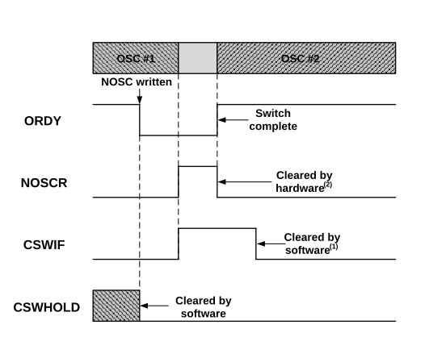
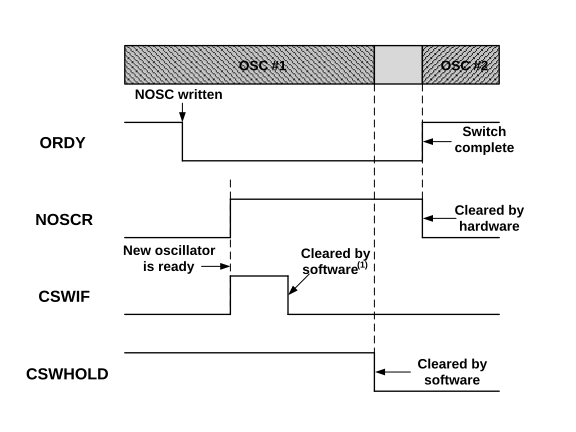

If the NOSC/NDIV bits are written with new values and the device is put to
Sleep before the clock switch completes, the switch will not take place and the device
will enter Sleep mode.
When the device wakes up from Sleep and CSWHOLD is clear (CSWHOLD = 0),
the clock switch will complete and the device will wake with the new clock active,
setting CSWIF.
When the device wakes from Sleep and CSWHOLD is set (CSWHOLD = 1), the
device will wake up with the old clock active, and the new clock source will be
requested again.
If Doze mode is in effect, the clock switch occurs on the next clock cycle
regardless of whether or not the CPU is active during that clock cycle.
Figure 12-7. Clock Switch (CSWHOLD =
0)

Note:
CSWIF is asserted coincident with
NOSCR; interrupt is serviced at OSC#2
speed.
The assertion of NOSCR may not be seen by the user as it is
only set for the duration of the switch.
Figure 12-8. Clock Switch (CSWHOLD =
1)

Note:
CSWIF may be cleared before or
after clearing CSWHOLD.
Figure 12-9. Clock Switch Abandoned
Note:
CSWIF may be cleared before or
after rewriting NOSC; CSWIF is not automatically
cleared.